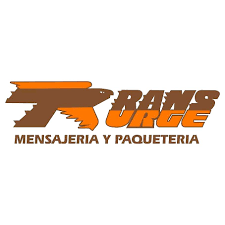

TRANS URGE NACE CON EL NOMBRE DE HERIBERTO COSS DEL BOSQUE EN EL AÑO DE 1988, CON LA COBERTURA DE MONTERREY SALTILLO, CON LA CAPACIDAD SUFICIENTE DE SATISFACER LAS NECESIDADES DE PAQUETERIA Y MENSAJERIA A CIENTOS DE CLIENTES DE MANERA RAPIDA, SEGURA Y EFICIENTE.
EN EL AÑO DE 1992 SE CONSTITUYE EN LA CIUDAD DE SALTILLO COAH. LA SOCIEDAD ANONIMA DENOMINADA TRANS URGE, S. A. DE C.V CON EL MOTIVO DE UBICAR A VARIOS ESTADOS DE LA REGION NORESTE PARA LA ENTREGA DE PAQUETERIA Y MENSAJERIA.
DADA LA EXPERIENCIA OBTENIDA EN LOS PRIMEROS AÑOS SE LOGRO EL RECONOCIMIENO POR EL MERCADO Y HASTA AHORA SE HA EXTENDIDO HASTA LA REGION OCCIDENTE DE LA REPUBLICA MEXICANA, OFRECIENDO LA MISMA CALIDAD Y SERVICIO.
